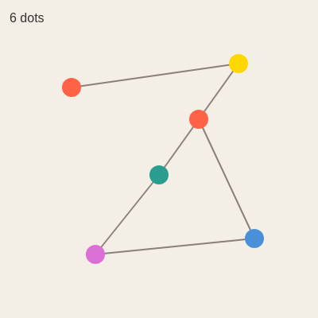
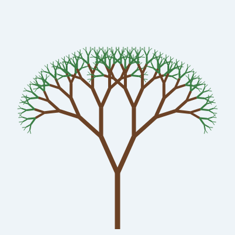

Chapter 11
A canvas in the browser
What a program sees §
In the playground, a program is JavaScript from the subset plus a deliberately small API for one 400 by 400 canvas. It is a toy's API, sized for sketches, games of one screen and demonstrations:
- Drawing:
background,fill,noFill,stroke,noStroke,line,rect,circle,ellipse,polygonandtext, named after p5.js's but a small set of their own, with colors as CSS strings. - A turtle:
forward,back,turn,penUp,penDownandgoto. - Input:
mouseX(),mouseY()andkeyIsDown(key), read when called, andonClick(handler). - Time:
setTimeout,setIntervaland their clears, and afunction frame(t), which the page calls 30 times a second. - The memory view's hook:
onCollect(handler), which hears each garbage collection. console.log, which writes under the canvas.
That is the whole of it: a program draws, listens and waits, and the page's DOM, the network and other files stay out of its reach. The playground's "click dots" sample uses most of it:
// Click to place dots
// Each click on the canvas adds a dot, joined to the last.
const DOT_COLORS = ["tomato", "gold", "#2a9d8f", "orchid", "#4a90d9"]; // the dots take these in turn
const DOT_RADIUS = 12; // in pixels
const LINE_COLOR = "#8a8178"; // the lines joining the dots
const BACKGROUND = "#f4efe6"; // the paper
let dots = [];
function draw() {
background(BACKGROUND);
stroke(LINE_COLOR, 2);
for (let i = 1; i < dots.length; i++) {
line(dots[i - 1][0], dots[i - 1][1], dots[i][0], dots[i][1]);
}
noStroke();
for (let i = 0; i < dots.length; i++) {
fill(DOT_COLORS[i % DOT_COLORS.length]);
circle(dots[i][0], dots[i][1], DOT_RADIUS);
}
fill("#333");
text(dots.length === 0 ? "click the canvas" : `${dots.length} dot${dots.length === 1 ? "" : "s"}`, 12, 28, 16);
}
onClick((x, y) => {
dots.push([Math.round(x), Math.round(y)]);
console.log("dot", dots.length, "at", Math.round(x), Math.round(y));
draw();
});
draw();

The page §
The page is js/web/. js_page.js makes everything the page shows, its styles included, so the HTML is only a door: an editor, the canvas and the console. js_runner.js loads js.wasm, the interpreter compiled from Roc, starts a program, then calls it a frame at a time, about 30 times a second. Each frame is a tick of the program's clock (Vm.tick!) that runs the clicks queued since the last tick, the timers due and frame(t). js_painter.js paints each effect's line on a 2D canvas as it arrives, and the browser shows the canvas when the frame's call returns. The page's JavaScript only loads, ticks and paints; the program itself runs in the wasm. What reaches the canvas is the program's drawing alone, as here for the fractal tree sample:

The memory view, js_memory.js, is a popup with two small charts of the last run. The top one is the heap's cells in use, which climb as the program allocates and drop at each collection, a sawtooth; the bottom one is the wasm memory's size.
The page runs a program on the browser's main thread, so it holds the program to step budgets: 3,000,000 steps before the first frame and 300,000 a frame, where the VM counts calls and loop passes (js/README.md, "Pitfalls").
js/build.shale names every file but index.html by its bytes, so a browser always loads the scripts that match its page, and it replaces the page only after js/page_check.mjs passes.
How an effect travels §
The interpreter reaches the world through a host, Canvas.Host, a record of four effectful functions:
Host : {
emit! : Canvas.Effect => {},
pointer! : Canvas.Axis => F64,
key! : Str => Canvas.KeyState,
collected! : { cells : U64, before : U64, live : U64 } => {},
An effect happens when the program calls for it: the VM hands each one to emit! in program order, console.log included, so a program that stops halfway has drawn what it drew before the stop. A read, pointer! or key!, is asked of the host when the program asks. collected! hears of each collection once it has swept. Every effect has one written form, Canvas.line_of, so a sample's golden log is the very text the page paints from.
- The page's host (
JsApp.roc, on the platform injs/wasm/) calls into the page's JavaScript while the Roc call runs. - The recording host,
js-canvas(JsCanvas.roc), writes every effect and every read as a line, for the golden logs. js-vm's host prints each log as it is made.
The queue and its clock §
Events.roc holds the one queue every callback goes through. A timer's callback, a click, the canvas's next frame(t) and a call of the onCollect handler after a collection are each an event, due at a time in milliseconds. The earliest runs first, and of two due at one time, the one queued first.
The clock is virtual. It reads 0 while the program's own code runs, and moves to each event's time as that event runs: on the page, a tick moves it on to the frame's time (Vm.tick!), and js-vm moves it from event to event until the queue is empty. So the order of the callbacks follows from the program alone, and a program prints the same on every run, and the same as node. Take this program:
setTimeout(function f() { console.log("f"); }, 10);
setTimeout(function g() { console.log("g"); }, 0);
console.log("x");
| step | the clock | what runs | it prints |
|---|---|---|---|
| the program | 0 | queues f due at 10 and g due at 1, then logs |
x |
| the first event | 1 | g |
g |
| the second event | 10 | f |
f |
g is due at 1: Events.timer_requested raises a delay below 1 ms to 1 ms, as node does. Node 22 and the dev build of js-vm each print x, g, f for it, run side by side for this chapter on 2026-11-25. The clock's column is read from Events.roc: an event is due at the clock plus its delay, and with_event_taken moves the clock to the due time of the event it takes.